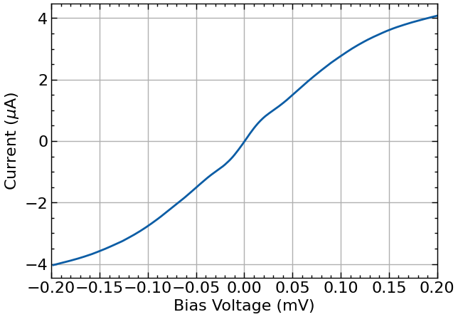
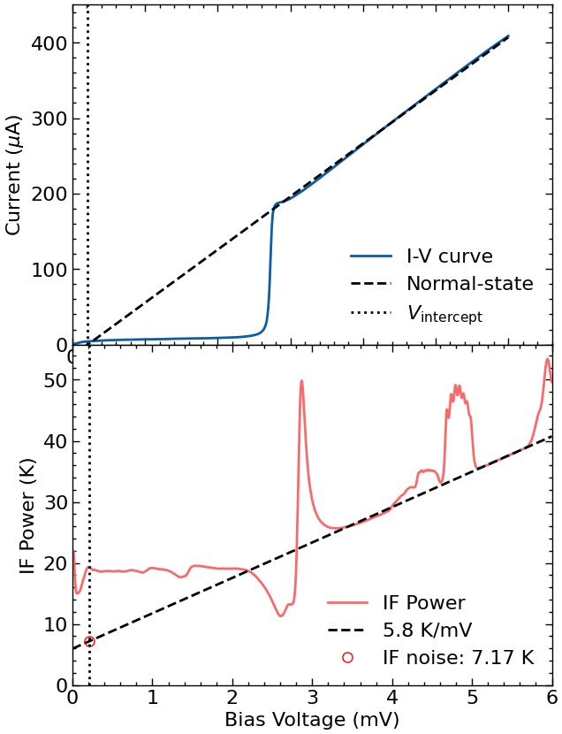
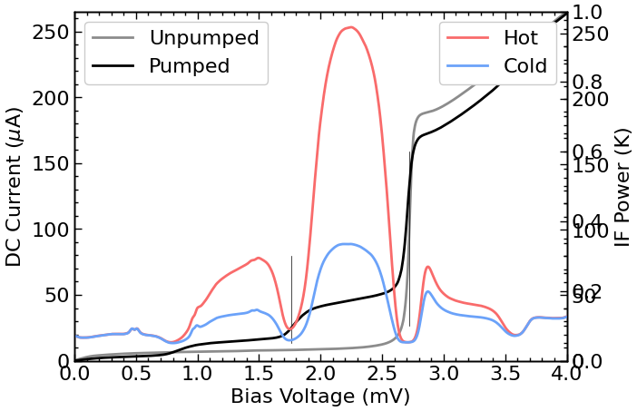
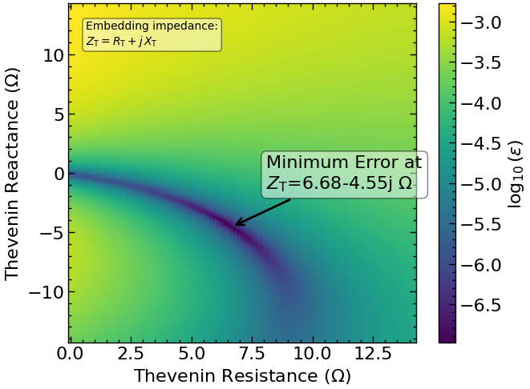
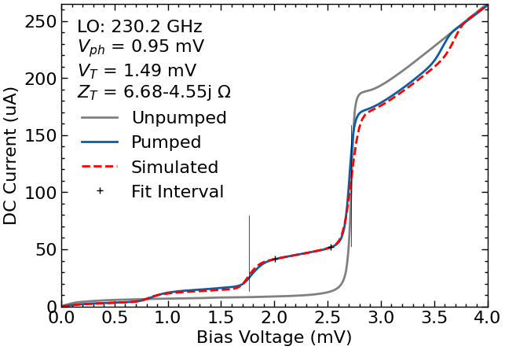
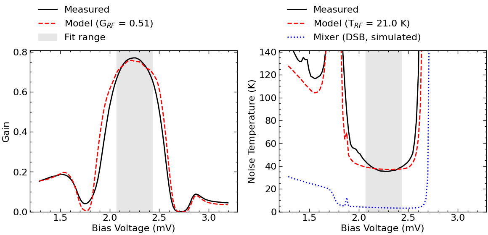

7. Example #3: Analyzing experimental data
This notebook will show a brief example of how QMix can be used to analyze experimental data.
For the purposes of this notebook, example data has been included in a directory called example-data/. This is experimental data that was taken from an SIS device illuminated by a local-oscillator at 230 GHz (see Garrett 2018).
QMix includes two classes that can be used to analyze this experimental data:
qmix.exp.DCData, which is used to analyze DC data (no LO illumination), and
qmix.exp.PumpedData, which is used to analyze pumped data (with LO illumination).
Note that a wide range of parameters can be passed to these classes in order to control how the data is imported and analyzed. Please see qmix.exp.parameters for a full list of optional keyword arguments and their default values.
[1]:
%matplotlib inline
import qmix
import numpy as np
import matplotlib.pyplot as plt
# https://github.com/garrettj403/SciencePlots
import scienceplots
plt.style.use(['science', 'notebook'])
7.1. Analyzing DC data
This is the data collected from the SIS device with no local-oscillator (LO) illumination.
7.1.1. Properties of the experimental DC data
The DC experimental data is located in two different files:
example/dciv.csv: DC tunneling current vs. bias voltageexample/dcif.csv: IF power vs. bias voltage
Both files are CSV files with one column for voltage and one column for current or IF power:
[2]:
!head example-data/dciv.csv
DC Bias Voltage (mV), DC Tunneling Current (mA)
0.016102, 0.007249
0.017391, 0.007265
0.019324, 0.007361
0.021257, 0.007378
0.023512, 0.007426
0.026090, 0.007474
0.028345, 0.007587
0.030600, 0.007619
0.032856, 0.007668
[3]:
!head example-data/dcif.csv
DC Bias Voltage (mV), IF Power (A.U.)
0.015780, 0.009150
0.017713, 0.009069
0.019968, 0.009101
0.021579, 0.009069
0.023512, 0.009037
0.026412, 0.009005
0.028667, 0.008956
0.030600, 0.009005
0.032856, 0.008988
In order to import these files properly, we will define the properties of the CSV files, which will then be passed on to the DCData class.
[4]:
csv_params = dict(delimiter = ',', # delimiter used by CSV files
usecols = (0,1), # columns to import
skip_header = 1, # skip the first row (the header)
v_fmt = 'mV', # units for voltage data
i_fmt = 'mA') # units for current data
We can also define some of the properties of the junction:
[5]:
junction_params = dict(area = 1.5) # area of the junction in um^2
And some additional properties that will control how the data is filtered:
[6]:
filter_params = dict(filter_data = True, # filter I-V data?
filter_nwind = 21) # width of Savitsky-Golay filter
And the physical temperatures of the hot and cold black body loads, which are used to calculate the noise temperature (here, room-temperature Eccosorb and Eccosorb immersed in liquid nitrogen):
[7]:
load_params = dict(t_hot = 295., # temperature of the hot load in K
t_cold = 80.) # temperature of the cold load in K
[8]:
params = {**csv_params, **junction_params, **filter_params, **load_params}
Note: For a full list of parameters, please see the documentation for qmix.exp.parameters.
7.1.2. Importing the experimental DC data
We will now use the DCData class to load, filter, and analyze the DC data. It will also automatically correct any offsets in the current or voltage data, calculate the properties of the DC I-V curve, and calculate the IF noise based on the shot noise.
[9]:
dciv_exp_data = np.genfromtxt('example-data/dciv.csv', delimiter=',')
dcif_exp_data = np.genfromtxt('example-data/dcif.csv', delimiter=',')
dciv = qmix.exp.DCData(dciv_exp_data, dcif_exp_data, **params)
DC I-V data:
Vgap: 2.72 mV
fgap: 656.99 GHz
Rn: 14.22 ohms
Rsg: 367.87 ohms
Q: 25.87
Jc: 12.74 kA/cm^2
Ileak: 8.68 uA
Offset: 0.10 mV
9.71 uA
Vint: 0.21 mV
IF noise: 7.17 K
[10]:
# Plot the DC I-V curve
fig, ax = plt.subplots(figsize=(7,5))
dciv.plot_dciv(ax=ax);

[11]:
# Plot the origin of the DC I-V curve
# to ensure that all offsets were corrected properly
fig, ax = plt.subplots(figsize=(7,5))
dciv.plot_offset(ax=ax);

[12]:
# Plot the IF power
# The linear region above the gap voltage is due to shot noise,
# which can be used to calculate the IF noise contribution
# see Woody (1985)
fig, ax = plt.subplots(2, figsize=(7,10))
dciv.plot_if_noise(ax=ax);

7.2. Analyzing pumped data at 230 GHz
We will now use the PumpedData class to import I-V and IF data from the device when it is illuminated by an LO at 230 GHz.
7.2.1. Properties of the experimental data
The experimental files are:
f230.2_iv.csv: the pumped I-V curvef230.2_if-hot.csv: the IF power measured with a hot blackbody loadf230.2_if-cold.csv: the IF power measured with a cold blackbody load
Again, these are all CSV files with two columns.
[13]:
!head example-data/f230.2_iv.csv
DC Bias Voltage (mV), DC Tunneling Current (mA)
0.016102, 0.008779
0.017069, 0.008747
0.019324, 0.008779
0.021901, 0.008827
0.023834, 0.008860
0.026090, 0.008876
0.027701, 0.008876
0.030600, 0.008924
0.033178, 0.008940
[14]:
!head example-data/f230.2_if-hot.csv
DC Bias Voltage (mV), IF Power (A.U.)
0.015780, 0.010599
0.017391, 0.010599
0.019646, 0.010535
0.020613, 0.010616
0.023834, 0.010599
0.026090, 0.010583
0.028989, 0.010551
0.030600, 0.010583
0.031889, 0.010616
[15]:
!head example-data/f230.2_if-cold.csv
DC Bias Voltage (mV), IF Power (A.U.)
0.015780, 0.010616
0.017391, 0.010567
0.018680, 0.010551
0.021257, 0.010487
0.023512, 0.010535
0.025445, 0.010583
0.028345, 0.010583
0.029956, 0.010535
0.032533, 0.010567
You can either import the CSV files directly with PumpedData or you can pass Numpy arrays. For this example, we will pass them as Numpy arrays.
[16]:
csv = dict(delimiter=',', usecols=(0,1), skip_header=1)
iv_data = np.genfromtxt('example-data/f230.2_iv.csv', **csv)
hot_data = np.genfromtxt('example-data/f230.2_if-hot.csv', **csv)
cold_data = np.genfromtxt('example-data/f230.2_if-cold.csv', **csv)
7.2.2. Importing the experimental data
The PumpedData class will automatically load, filter and analyze the data. This includes calculating the noise temperature and the properties of the embedding circuit.
Note: that this experimental data is imported in the form of Numpy arrays. Each array has two columns with one for voltage and one for current or IF power (depending on the file).
[17]:
pump = qmix.exp.PumpedData(iv_data, dciv, hot_data, cold_data,
freq = 230.2, # LO frequency in [GHz]
**params)
Importing:
-> Files:
I-V file: Numpy array
IF hot file: Numpy array
IF cold file: Numpy array
-> Frequency: 230.2 GHz
-> Impedance recovery:
- good fit
- embedding circuit:
- voltage: +0.55 * Vgap
- impedance: +0.47-0.32j * Rn
- avail. power: +41.30 nW
- junction:
- drive level: +0.93
- impedance: +0.71+0.08j * Rn
- deliv. power: +38.45 nW
-> Analyze IF data:
- noise temp: 35.5 K
- gain: -1.13 dB
- IF noise: +7.17 K
[18]:
# Plot the I-V curve and the IF powers
fig, ax1 = plt.subplots(figsize=(7,5))
ax2 = ax1.twinx()
pump.plot_ivif(ax=(ax1,ax2));

[19]:
# Plot the noise temperature and gain
fig, ax1 = plt.subplots(figsize=(7,5))
ax2 = ax1.twinx()
pump.plot_gain_noise_temp(ax=(ax1,ax2));

7.2.3. Impedance recovery
The PumpedData class also recovers the embedding circuit using the technique described by Skalare (1989) and Withington et al. (1995).
[20]:
# Plot the error surface
fig, ax = plt.subplots(figsize=(7,5.5))
ax = pump.plot_error_surface(ax=ax)
ax.set_xlabel(r'Thevenin Resistance ($\Omega$)')
ax.set_ylabel(r'Thevenin Reactance ($\Omega$)');
This plot was calculated using the error function from Withington et al. (1995). The minimum error represents the best impedance estimation.
[21]:
# Plot a simulated I-V curve using the recovered impedance
fig, ax = plt.subplots(figsize=(7,5))
pump.plot_simulated(ax=ax);

7.2.4. Comparing the noise with a simulation of the mixer
The recovered embedding circuit reproduces the pumped I-V curve. It can also be used to simulate the mixer itself: mixer_noise runs a harmonic balance of the LO with the recovered circuit and then a small-signal analysis (qmix.small_signal, Tucker theory), which gives the double-sideband (DSB) conversion gain of the mixer, \(G_\mathrm{mix}\), and its DSB noise temperature from the junction’s shot noise, \(T_\mathrm{mix}\).
The measured gain and noise temperature describe the whole receiver, though. mixer_noise models the receiver as an RF/optics stage (gain \(G_\mathrm{RF}\), noise temperature \(T_\mathrm{RF}\)) in front of the mixer, followed by the IF chain (noise temperature \(T_\mathrm{IF}\), from the shot noise above):
Only \(G_\mathrm{RF}\) and \(T_\mathrm{RF}\) are fitted (around the best bias voltage), so the bias dependence of the measured gain and noise temperature is a test of the simulation.
Note: The IF frequency, the IF load impedance and the physical temperature are not part of the experimental data, so they must be given. Here, the results hardly depend on them.
[22]:
# Simulate the mixer and fit the RF/optics stage
noise = pump.mixer_noise(f_if=6., z_if=50., temp=4.)
# Values at the best bias voltage
g_mix = np.interp(pump.v_best, noise.voltage, noise.g_mix)
t_mix = np.interp(pump.v_best, noise.voltage, noise.t_mix)
print("RF/optics stage:")
print(" gain: {:.2f} ({:+.1f} dB)".format(noise.g_rf, 10 * np.log10(noise.g_rf)))
print(" noise: {:.1f} K".format(noise.t_rf))
print("Mixer (simulated, at {:.2f} mV):".format(pump.v_best * pump.vgap * 1e3))
print(" DSB gain: {:.2f} ({:+.1f} dB)".format(g_mix, 10 * np.log10(g_mix)))
print(" DSB noise: {:.1f} K".format(t_mix))
print("IF noise: {:.1f} K".format(noise.t_if))
print("Receiver noise: {:.1f} K (measured)".format(pump.tn_best))
RF/optics stage:
gain: 0.51 (-2.9 dB)
noise: 21.0 K
Mixer (simulated, at 2.25 mV):
DSB gain: 1.47 (+1.7 dB)
DSB noise: 3.4 K
IF noise: 7.2 K
Receiver noise: 35.5 K (measured)
[23]:
# Plot the measured and modelled gain and noise temperature
fig, ax = plt.subplots(1, 2, figsize=(14,5))
pump.plot_mixer_noise(noise, ax=ax);

With only the two constants of the RF/optics stage fitted, the simulated mixer reproduces the bias dependence of the measured gain across the photon steps, and the measured noise temperature around the best bias voltage. The simulated photon step is slightly wider than the measured one. (Simulated photon steps tend to be sharper than measured ones; mixer_noise(..., smeared=True) uses the smeared response function instead, which improves the match here.)
The mixer itself contributes only a few kelvin to the receiver noise; most of it comes from the RF/optics stage and from the IF noise (divided by the gain of the optics and the mixer).